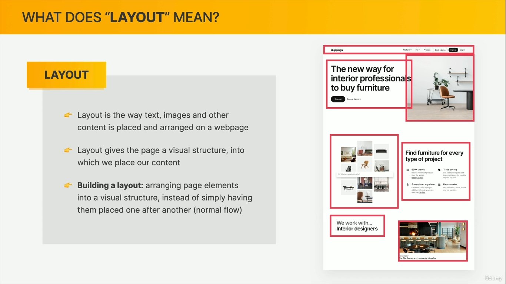

When float:left or float:right is used the element behaves like its pulled out of page and if any background styles are present they will begin to act like they no longer have any content and collapse, unless there is padding defined or there is fixed height defined.
To resolve this we have to use clear property after the float elements, in same parent
.clear{
clear:both; -- could be right or left too
}
define an empty div after floating elements with this class
.clear-fix::after{
clear:both;
content: ""; --without content after will not have any impact, define it even if its empty content
display:block; --clearing floats only works on block level elements. ::after and before creates inline
}
add this class to the parent element. No need to create empty manual divs